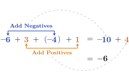

\[ -5 + 2 + (-4) + 8 = \answer {1} \]
\[ 3 + (-1) + 6 + (-15) + 1 = \answer {-6} \]
\[ 7 + (-12) + 3 = \answer {-2} \]
The operation of addition is commutative, meaning numbers can be added in any order without changing the result. For example,
When adding multiple numbers with different signs, we can use this property to work more efficiently. Instead of working from left to right, simply combine the positive numbers and the negative numbers separately, then add those results.
Use the commutative property to find the sum \(-6 + 3 + (-4) + 1.\)
Add the negative numbers \(-6\) and \(-4,\) then add the positive numbers \(3\) and \(1.\) Then add the resulting integers to find the answer.

The rules for adding integers apply to all real numbers. The integers, along with the fractions and decimals between them, make up the set of real numbers—more on that later. Did you know that there are infinitely many numbers between each integer?
Once you have mastered these addition rules, you will be ready for subtraction. As you will see in the next lesson, if you can add integers, you can subtract them too!